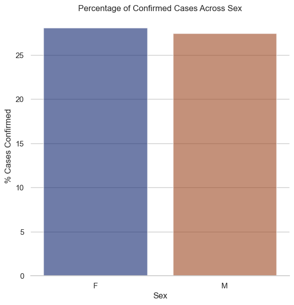

During the pandemic, I was impressed by how quickly data was collected and reported on a large scale.
Suddenly, I became curious about how to collect my own data, analyze it, and make effective data-driven decisions.
The opportunity presented itself during my service at the Lekma Hospital while delivering quality healthcare to the people of Teshie.
My aim for collecting this data was to understand the impact coronavirus (COVID-19) had on a small community.
Prior to collecting data, consent was sought from each patient being tested.
Additionally, I made sure to provide extensive information and education concerning the research to allow my patients to make an informed decision.
In gathering this information, I intended to educate my patients about the safety precautions of the virus such as the importance of wearing nose masks and practicing strict personal hygiene.
By the final year, enough data had been gathered. This helped to influence the decision of whether the numbers generated from the data was enough for the Lekma facility to
become a vaccination center for its locals.


Before carrying out the analysis, I had a preconceived notion that only adults were susceptible to and suffered the most complications from the virus.
However the data visualized over the 3 year time frame indicated that in the year 2020, three categories of age groups did not record any positive cases.
These included newborns, young children between the ages of 5-14, and those aged 65-79 years. Adolescents through to middle-aged individuals had about 17% positive cases; which was the lowest compared to that of the 50-64 year old population having about 38% confirmed cases.
Infants, babies as well as the elderly had the most confirmed cases in the same year.
The following year yielded totally different results among all age groups.
Four out of the seven age groups ranged between 20-40 % confirmed cases while the age group with the most cases the year prior plummeted. Those aged 2-4 years recorded percentages as low as 18% while the percentage of the elderly reduced to half of the numbers recorded the initial year.
In the final year, there were less than 20% confirmed cases across all age groups with the lowest being children.
It was evident that irrespective of age, all age groups were affected equally.
Across all age groups, the elderly recorded the highest number of confirmed cases and also had the
highest percentage of deaths in the 3 year interval occuring in 2022.
The middle-aged individuals recorded a significantly low
number of deaths per percentage of confirmed cases in the year 2021.
Adolescents and young adults were the only age group to have recorded deaths in the year 2020

There were no significant differences noted between sexes of confirmed cases.
However, the percentage of deaths per year
showed that there was a higher mortality rate noted in the males than females
There were similarities in the percentage of confirmed cases in the year 2020
and 2022 as well as that of the percentages of deaths in those same years.
It is evident that in 2020 there were about 1.5% more deaths as compared to that of 2022 (5.2%).
The percentages of cases confirmed in 2021 were double that of both years.
It was recorded that the percentages of confirmed deaths did not match the cases confirmed.